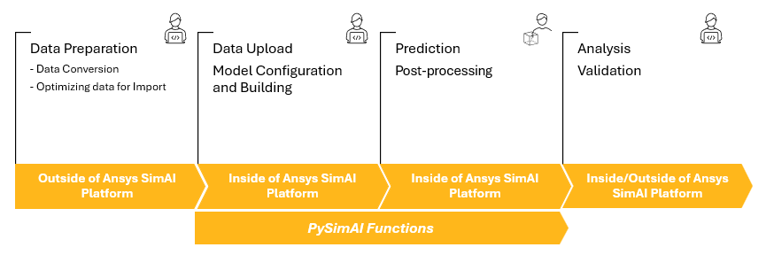

PySimAI documentation#
Release v0.3.0 (Changelog)
PySimAI is part of the PyAnsys ecosystem that allows you to use SimAI within a Python environment of your choice in conjunction with other PyAnsys libraries and external Python libraries. With PySimAI, you can manage and access your data on the platform from within Python apps and scripts.
The following illustration depicts the Ansys SimAI platform user workflow.

For more information, see the Ansys SimAI User’s guide
User guide
Guides on how to achieve specific tasks with PySimAI.
API reference
Describes the public Python classes, methods, and functions.
Examples
A collection of examples demonstrating the capabilities of PySimAI.
Requirements#
PySimAI requires Python 3.9 or later.